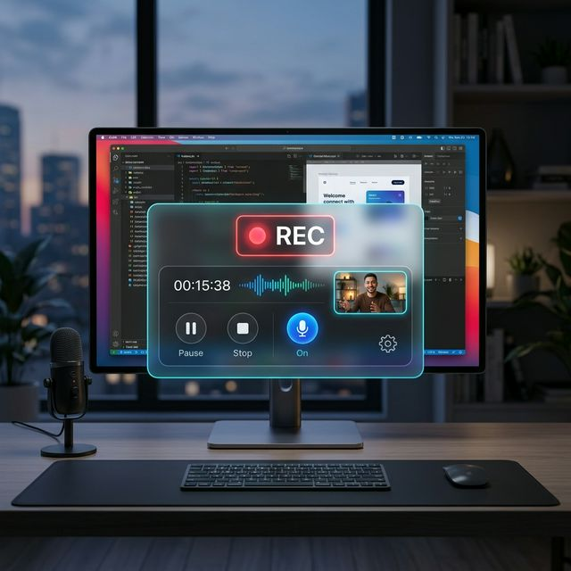

The most lightweight and powerful screen recording tool designed for Windows. Record monitors, specific windows, and high-fidelity audio with zero friction.

Select any connected display or pin to a specific application window. The capture follows the window even if you move or resize it.
Integrated microphone recording with automatic audio/video muxing. Captures high-fidelity sound for tutorials and demos.
A minimalist, draggable control pill that stays on top. Pulsing REC indicator keeps you aware of your recording status.
No more lost recordings. Everything is saved directly to your Videos folder in optimized H.264 format.
ScreenCapture360 is a proprietary project owned by KhowarLabs. While the source is visible for transparency, all rights are reserved. See the license for full details.
Read Full License